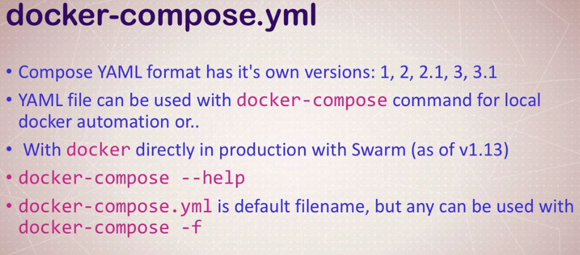

The second one
Section 6 lecture 51

52


df
version: '2'
services:
drupal:
image: drupal:8-apache
environment:
DB_host: postgres
#DB_DATABASE: postgres
#POSTGRES_DB=postgres
ports:
- "8082:80"
volumes:
- /var/www/html/modules
- /var/www/html/profiles
- /var/www/html/themes
# this takes advantage of the feature in Docker that a new anonymous
# volume (which is what we're creating here) will be initialized with the
# existing content of the image at the same location
- /var/www/html/sites
restart: always
postgres:
image: postgres:10
environment:
POSTGRES_PASSWORD: example
restart: always

sd


Стоит попробовать такой еще совет по именованным волюмам в версии 3 компостера:
version: '3'services:
worker:
...
volumes:
- common_code:/application/path
different-worker:
...
volumes:
- common_code:/different/application/pathvolumes:
- type: bind
name: common_code
source: /local/path
При первомстарте в Dockerfile была ошибка - отсутствовал && на одной из строк:
vdanev@ora-vsrv:~/docker/udemy-docker-mastery/compose-assignment-2$ docker-compose up
Creating network "compose-assignment-2_default" with the default driver
Building drupal
Step 1/7 : FROM drupal:8.2
8.2: Pulling from library/drupal
ef0380f84d05: Pull complete
...
Digest: sha256:f2dc3f325da9c9e017f5e2ee0e22a72781cdded21955e533c412d35e09304f8c
Status: Downloaded newer image for drupal:8.2
---> 68b9d32702ee
Step 2/7 : ENV http_proxy "http://10.1.32.100:8081"
---> Running in 67f2aa30c641
Removing intermediate container 67f2aa30c641
---> 4e2221fe2081
Step 3/7 : ENV https_proxy "http://10.1.32.100:8081"
---> Running in 49bc9f40c420
Removing intermediate container 49bc9f40c420
---> 58fbc8ea14cd
Step 4/7 : RUN apt-get update && apt-get install -y git rm -rf /var/lib/apt/lists/*
---> Running in 49ae62944fb3
Get:1 http://security.debian.org jessie/updates InRelease [44.9 kB]
Ign http://deb.debian.org jessie InRelease
Get:2 http://deb.debian.org jessie-updates InRelease [145 kB]
Get:3 http://deb.debian.org jessie Release.gpg [2420 B]
Get:4 http://deb.debian.org jessie Release [148 kB]
Get:5 http://security.debian.org jessie/updates/main amd64 Packages [717 kB]
Get:6 http://deb.debian.org jessie-updates/main amd64 Packages [23.0 kB]
Get:7 http://deb.debian.org jessie/main amd64 Packages [9098 kB]
Fetched 10.2 MB in 30s (332 kB/s)
Reading package lists...
E: Command line option 'r' [from -rf] is not known.
ERROR: Service 'drupal' failed to build: The command '/bin/sh -c apt-get update && apt-get install -y git rm -rf /var/lib/apt/lists/*' returned a non-zero code: 100
vdanev@ora-vsrv:~/docker/udemy-docker-mastery/compose-assignment-2$
При втором запуске другая ошибка:
unning in 6ebbf2ba7ca6
Removing intermediate container 6ebbf2ba7ca6
---> e24c89813934
Step 6/7 : RUN git clone --branch 8.x-3.x --single-branch --depth 1 https://git.drupal.org/project/bootstrap.git && chown -R www-data:www-data bootstrap
ERROR: Service 'drupal' failed to build: device or resource busy
После выполнения команд:
danev@ora-vsrv:~/docker/udemy-docker-mastery/compose-assignment-2$ docker-compose down --rmi local
Removing network compose-assignment-2_default
vdanev@ora-vsrv:~/docker/udemy-docker-mastery/compose-assignment-2$ docker-compose down --rmi all
Removing network compose-assignment-2_default
WARNING: Network compose-assignment-2_default not found.
Removing image custom-drupal
ERROR: Failed to remove image for service drupal: 404 Client Error: Not Found ("No such image: custom-drupal:latest")
Removing image postgres:10
С третьей попытки запустилось:
vdanev@ora-vsrv:~/docker/udemy-docker-mastery/compose-assignment-2$ docker-compose up
Creating network "compose-assignment-2_default" with the default driver
..
postgres_1_f975eb1afc57 | 2018-11-06 18:03:07.401 UTC [1] LOG: listening on IPv4 address "0.0.0.0", port 5432
postgres_1_f975eb1afc57 | 2018-11-06 18:03:07.401 UTC [1] LOG: listening on IPv6 address "::", port 5432
postgres_1_f975eb1afc57 | 2018-11-06 18:03:07.421 UTC [1] LOG: listening on Unix socket "/var/run/postgresql/.s.PGSQL.5432"
postgres_1_f975eb1afc57 | 2018-11-06 18:03:07.454 UTC [52] LOG: database system was shut down at 2018-11-06 18:03:07 UTC
postgres_1_f975eb1afc57 | 2018-11-06 18:03:07.465 UTC [1] LOG: database system is ready to accept connections
.
Ссылка http://127.0.0.1:8082/core/install.php работает
т.е.
Dockerfile
FROM drupal:8.2
ENV http_proxy "http://10.1.32.100:8081"
ENV https_proxy "http://10.1.32.100:8081"
RUN apt-get update && apt-get install -y git \
&& rm -rf /var/lib/apt/lists/*
WORKDIR /var/www/html/themes
RUN git clone --branch 8.x-3.x --single-branch --depth 1 https://git.drupal.org/project/bootstrap.git \
&& chown -R www-data:www-data bootstrap
WORKDIR /var/www/html
и
docker-compose.yml
version: "3"
services:
drupal:
build:
context: .
dockerfile: Dockerfile
image: custom-drupal
environment:
DB_host: postgres
ports:
- "8082:80"
volumes:
- /var/www/html/modules
- /var/www/html/profiles
- /var/www/html/themes
- /var/www/html/sites
- ./drupal-data:/var/lib/postgresql/data
restart: always
postgres:
image: postgres:10
environment:
POSTGRES_PASSWORD: example
restart: always

У меня были ошибки с базой, поэтому я удалил все (--rmi all -v) и взял такие конфиги:
docker-compose.yml
version: '2'
services:
drupal:
image: custom-drupal
build: .
ports:
- "8082:80"
volumes:
- drupal-modules:/var/www/html/modules
- drupal-profiles:/var/www/html/profiles
- drupal-sites:/var/www/html/themes
- drupal-themes:/var/www/html/sites
postgres:
image: postgres:9.6
environment:
- POSTGRES_PASSWORD=mypassword
volumes:
- drupal-data:/var/lib/postgresql/data
volumes:
drupal-data:
drupal-modules:
drupal-profiles:
drupal-sites:
drupal-themes:
Dockerfile
FROM drupal:8.2
ENV http_proxy "http://10.1.32.100:8081"
ENV https_proxy "http://10.1.32.100:8081"
RUN apt-get update && apt-get install -y git \
&& rm -rf /var/lib/apt/lists/*
WORKDIR /var/www/html/themes
RUN git clone --branch 8.x-3.x --single-branch --depth 1 https://git.drupal.org/project/bootstrap.git \
&& chown -R www-data:www-data bootstrap
WORKDIR /var/www/html
И запустил все это добро.
Прошел установку друпала:

1


sd

root@node1:/tmp# docker-machine create node1-1
Creating CA: /root/.docker/machine/certs/ca.pem
Creating client certificate: /root/.docker/machine/certs/cert.pem
Running pre-create checks...
(node1-1) Image cache directory does not exist, creating it at /root/.docker/machine/cache...
(node1-1) No default Boot2Docker ISO found locally, downloading the latest release...
(node1-1) Default Boot2Docker ISO is out-of-date, downloading the latest release...
(node1-1) Latest release for github.com/boot2docker/boot2docker is v18.09.0
(node1-1) Downloading /root/.docker/machine/cache/boot2docker.iso from https://github.com/boot2docker/boot2docker/releases/download/v18.09.0/boot2docker.iso...
(node1-1) 0%....10%....20%....30%....40%....50%....60%....70%....80%....90%....100%
(node1-1) Copying /root/.docker/machine/cache/boot2docker.iso to /root/.docker/machine/machines/node1-1/boot2docker.iso...
(node1-1) Creating VirtualBox VM...
(node1-1) Creating SSH key...
(node1-1) Starting the VM...
(node1-1) Check network to re-create if needed...
(node1-1) Found a new host-only adapter: "vboxnet0"
(node1-1) Waiting for an IP...
Waiting for machine to be running, this may take a few minutes...
Detecting operating system of created instance...
Waiting for SSH to be available...
Detecting the provisioner...
Provisioning with boot2docker...
Copying certs to the local machine directory...
Copying certs to the remote machine...
Setting Docker configuration on the remote daemon...
Checking connection to Docker...
Docker is up and running!
To see how to connect your Docker Client to the Docker Engine running on this virtual machine, run: docker-machine env node1-1
root@node1:/tmp# docker-machine env node1-1
export DOCKER_TLS_VERIFY="1"
export DOCKER_HOST="tcp://192.168.99.100:2376"
export DOCKER_CERT_PATH="/root/.docker/machine/machines/node1-1"
export DOCKER_MACHINE_NAME="node1-1"
# Run this command to configure your shell:
# eval $(docker-machine env node1-1)
root@node1:/tmp#
root@node1:/tmp# docker-machine ssh node1-1
( '>')
/) TC (\ Core is distributed with ABSOLUTELY NO WARRANTY.
(/-_--_-\) www.tinycorelinux.net
docker@node1-1:~$ exit


root@node1:~# docker swarm init --advertise-addr 104.248.27.25
Error response from daemon: This node is already part of a swarm. Use "docker swarm leave" to leave this swarm and join another one.
root@node1:~# docker swarm leave --help
Usage: docker swarm leave [OPTIONS]
Leave the swarm
Options:
-f, --force Force this node to leave the swarm, ignoring warnings
root@node1:~# docker swarm leave
Error response from daemon: You are attempting to leave the swarm on a node that is participating as a manager. Removing the last manager erases all current state of the swarm. Use `--force` to ignore this message.
root@node1:~# docker swarm leave --force
Node left the swarm.
root@node1:~#
root@node1:~# docker swarm init --advertise-addr 104.248.27.25
Swarm initialized: current node (5rhn6ymx9wjzub9k6fsfyqb7l) is now a manager.
To add a worker to this swarm, run the following command:
docker swarm join --token SWMTKN-1-5trev7p602xl7cvi1fi4z1vccsup06tne7q024kxtpi6dluw1s-c565nxr5ns492tysk4og5uli0 104.248.27.25:2377
To add a manager to this swarm, run 'docker swarm join-token manager' and follow the instructions.
How to Configure the Linux Firewall for Docker Swarm on Ubuntu 16.04
Execute the following commands on the nodes that will function as Swarm managers:
ufw allow 2376/tcp && ufw allow 2377/tcp && ufw allow 7946/tcp && ufw allow 7946/udp && ufw allow 4789/udp
Then on each node that will function as a worker, execute the following commands:
ufw allow 2376/tcp && ufw allow 7946/tcp && ufw allow 7946/udp && ufw allow 4789/udp
systemctl restart docker
root@node2:~# docker swarm join --token SWMTKN-1-5trev7p602xl7cvi1fi4z1vccsup06tne7q024kxtpi6dluw1s-c565nxr5ns492tysk4og5uli0 104.248.27.25:2377
This node joined a swarm as a worker.
root@node3:~# docker swarm leave
Node left the swarm.
root@node3:~# docker swarm join --token SWMTKN-1-5trev7p602xl7cvi1fi4z1vccsup06tne7q024kxtpi6dluw1s-c565nxr5ns492tysk4og5uli0 104.248.27.25:2377
This node joined a swarm as a worker.
root@node1:~# docker node ls
ID HOSTNAME STATUS AVAILABILITY MANAGER STATUS ENGINE VERSION
5rhn6ymx9wjzub9k6fsfyqb7l * node1 Ready Active Leader 18.06.1-ce
3fphlbf06wrcopll89qz5dzsd node2 Ready Active 18.06.1-ce
kowqlk42kyukt7bc92dyjp0dy node3 Ready Active 18.06.1-ce
root@node1:/tmp# docker swarm join-token manager
To add a manager to this swarm, run the following command:
docker swarm join --token SWMTKN-1-5trev7p602xl7cvi1fi4z1vccsup06tne7q024kxtpi6dluw1s-4o771iddnfs0t0pjn2veo4rfo 104.248.27.25:2377
root@node3:~# docker swarm join-token worker
To add a worker to this swarm, run the following command:
docker swarm join --token SWMTKN-1-5trev7p602xl7cvi1fi4z1vccsup06tne7q024kxtpi6dluw1s-c565nxr5ns492tysk4og5uli0 104.248.19.195:2377
root@node3:~# docker node ls
ID HOSTNAME STATUS AVAILABILITY MANAGER STATUS ENGINE VERSION
5rhn6ymx9wjzub9k6fsfyqb7l node1 Ready Active Leader 18.06.1-ce
3fphlbf06wrcopll89qz5dzsd node2 Ready Active Reachable 18.06.1-ce
kowqlk42kyukt7bc92dyjp0dy node3 Down Active 18.06.1-ce
ya42dm3ks8vrlroxwz5xwbbpg * node3 Ready Active Reachable 18.06.1-ce
root@node3:~# docker service create --replicas 3 alpine ping 8.8.8.8
8z3iu0fuwue6gnlbfv6uw48r2
overall progress: 3 out of 3 tasks
1/3: running [==================================================>]
2/3: running [==================================================>]
3/3: running [==================================================>]
verify: Service converged
root@node3:~# docker service ls
ID NAME MODE REPLICAS IMAGE PORTS
8z3iu0fuwue6 sleepy_ptolemy replicated 3/3 alpine:latest
root@node3:~# docker node ps
ID NAME IMAGE NODE DESIRED STATE CURRENT STATE ERROR PORTS
xj1p367zr2bg sleepy_ptolemy.1 alpine:latest node3 Running Running 26 seconds ago
root@node3:~# docker node ps node2
ID NAME IMAGE NODE DESIRED STATE CURRENT STATE ERROR PORTS
kafp4kzfu1yb sleepy_ptolemy.3 alpine:latest node2 Running Running 43 seconds ago
root@node3:~# docker service ps sleepy_ptolemy
ID NAME IMAGE NODE DESIRED STATE CURRENT STATE ERROR PORTS
xj1p367zr2bg sleepy_ptolemy.1 alpine:latest node3 Running Running about a minute ago
cwrrctup39kn sleepy_ptolemy.2 alpine:latest node1 Running Running about a minute ago
kafp4kzfu1yb sleepy_ptolemy.3 alpine:latest node2 Running Running about a minute ago

root@node1:~# docker network create --driver overlay mydrupal
q56148b4mqdzikj1ol8i4w6hr
root@node1:~# docker service create --name psql --network mydrupal -e POSTGRES_PASSWORD=mypass postgres
f25xqfnzzpacp5j6s2pz1y6x0
overall progress: 1 out of 1 tasks
1/1: running [==================================================>]
verify: Service converged
root@node1:~# docker service ls
ID NAME MODE REPLICAS IMAGE PORTS
f25xqfnzzpac psql replicated 1/1 postgres:latest
8z3iu0fuwue6 sleepy_ptolemy replicated 3/3 alpine:latest
root@node1:~# docker network ls
NETWORK ID NAME DRIVER SCOPE
47d185017ae1 bridge bridge local
69d6fe0b3dc3 docker_gwbridge bridge local
fa66ed36c6c5 host host local
jdkr9aju5urj ingress overlay swarm
q56148b4mqdz mydrupal overlay swarm
2364c9e63d9f none null local
root@node1:~# docker service ps psql
ID NAME IMAGE NODE DESIRED STATE CURRENT STATE ERROR PORTS
f9j7jo3zn039 psql.1 postgres:latest node1 Running Running 47 seconds ago
root@node1:~# docker container logs psql.1.f9j7jo3zn039xh7iwv0d7ook7
The files belonging to this database system will be owned by user "postgres".
This user must also own the server process.
...
PostgreSQL init process complete; ready for start up.
2018-11-09 13:51:43.917 UTC [1] LOG: listening on IPv4 address "0.0.0.0", port 5432
2018-11-09 13:51:43.918 UTC [1] LOG: listening on IPv6 address "::", port 5432
2018-11-09 13:51:43.924 UTC [1] LOG: listening on Unix socket "/var/run/postgresql/.s.PGSQL.5432"
2018-11-09 13:51:43.945 UTC [48] LOG: database system was shut down at 2018-11-09 13:51:43 UTC
2018-11-09 13:51:43.957 UTC [1] LOG: database system is ready to accept connections
root@node1:~# docker service create --name drupal --network mydrupal -p 80:80 drupal
yjcvs7tyj5cfyf4axkq5u6drz
overall progress: 1 out of 1 tasks
1/1: running [==================================================>]
verify: Service converged
root@node1:~# docker service ls
ID NAME MODE REPLICAS IMAGE PORTS
yjcvs7tyj5cf drupal replicated 1/1 drupal:latest *:80->80/tcp
f25xqfnzzpac psql replicated 1/1 postgres:latest
8z3iu0fuwue6 sleepy_ptolemy replicated 3/3 alpine:latest
root@node1:~# watch docker service ls
Every 2.0s: docker service ls node1: Fri Nov 9 13:59:41 2018
ID NAME MODE REPLICAS IMAGE PORTS
yjcvs7tyj5cf drupal replicated 1/1 drupal:latest *:80->80/tcp
f25xqfnzzpac psql replicated 1/1 postgres:latest
8z3iu0fuwue6 sleepy_ptolemy replicated 3/3 alpine:latest
root@node1:~# docker service create --name search --replicas 3 -p 9200:9200 elasticsearch:2
80cp2ce2p5xo028tae14wsu2e
overall progress: 2 out of 3 tasks
1/3: preparing [=================================> ]
2/3: running [==================================================>]
3/3: running [==================================================>]
^COperation continuing in background.
Use `docker service ps 80cp2ce2p5xo028tae14wsu2e` to check progress.
root@node1:~#
root@node1:~# docker service ps search
ID NAME IMAGE NODE DESIRED STATE CURRENT STATE ERROR PORTS
ri9h0hjat1rk search.1 elasticsearch:2 node1 Running Running 19 minutes ago
yy93s93wnv9z search.2 elasticsearch:2 node2 Running Running 18 minutes ago
2z9b9wodudim search.3 elasticsearch:2 node3 Running Preparing 21 minutes ago


Вот что я сделал самостоятельно на ассесмент:
#create two overlay networks
docker network create --driver overlay backend
docker network create --driver overlay frontend
#create vote service
docker service create --name vote --network frontend --replicas 2 -p 80:80 dockersamples/examplevotingapp_vote:before
#redis
docker service create --name redis --network frontend redis:3.2
#worker
docker service create --name worker --network frontend --network backend dockersamples/examplevotingapp_worker
#db
docker service create --name db --network backend -e POSTGRES_PASSWORD=mypass --mount type=volume,source=db-data,target=/var/lib/postgresql/data postgres:9.4
#result
docker service create --name result --network backend -p 5001:80 dockersamples/examplevotingapp_result:before
Результат выполнения:
root@node1:~# docker service ls
ID NAME MODE REPLICAS IMAGE PORTS
80cp2ce2p5xo search replicated 3/3 elasticsearch:2 *:9200->9200/tcp
root@node1:~# docker network create --driver overlay backend
48v8tslms4v001peiryqwf41f
root@node1:~# docker network create --driver overlay frontend
77uzpz8eyptykvxyimkbpiuz2
root@node1:~# docker service create --name vote --network frontend --replicas 2 -p 80:80 dockersamples/examplevotingapp_vote:before
nixnml5rtecs6bpyzlq3t01vz
overall progress: 2 out of 2 tasks
1/2: running [==================================================>]
2/2: running [==================================================>]
verify: Service converged
root@node1:~# docker service create --name redis --network frontend redis:3.2
m1p0xjgxjsspncvlv87yquc3u
overall progress: 1 out of 1 tasks
1/1: running [==================================================>]
verify: Service converged
root@node1:~# docker service create --name worker --network frontend --network backend dockersamples/examplevotingapp_worker
p1evkio5gq1apjn0iywno7drb
overall progress: 0 out of 1 tasks
overall progress: 0 out of 1 tasks
1/1: preparing [=================================> ]
^COperation continuing in background.
Use `docker service ps p1evkio5gq1apjn0iywno7drb` to check progress.
root@node1:~# docker service create --name db --network backend -e POSTGRES_PASSWORD=mypass --mount type=volume,source=db-data,target=/var/lib/postgresql/data postgres:9.4
tihtgcdh6gshc0o29knlicfb6
overall progress: 0 out of 1 tasks
1/1: preparing [=================================> ]
^COperation continuing in background.
Use `docker service ps tihtgcdh6gshc0o29knlicfb6` to check progress.
root@node1:~# docker service create --name result --network backend -p 5001:80 dockersamples/examplevotingapp_result:before
kx97ihdnyo5g6rg8zmwfiedts
overall progress: 1 out of 1 tasks
1/1: running [==================================================>]
verify: Service converged
root@node1:~# docker service ls
ID NAME MODE REPLICAS IMAGE PORTS
tihtgcdh6gsh db replicated 1/1 postgres:9.4
m1p0xjgxjssp redis replicated 1/1 redis:3.2
kx97ihdnyo5g result replicated 1/1 dockersamples/examplevotingapp_result:before *:5001->80/tcp
80cp2ce2p5xo search replicated 3/3 elasticsearch:2 *:9200->9200/tcp
nixnml5rtecs vote replicated 2/2 dockersamples/examplevotingapp_vote:before *:80->80/tcp
p1evkio5gq1a worker replicated 1/1 dockersamples/examplevotingapp_worker:latest
Как решил задачу препод:
docker network create -d overlay backend
docker network create -d overlay frontend
docker service create --name vote -p 80:80 --network frontend --replicas 2 dockersamples/examplevotingapp_vote:before
docker service create --name redis --network frontend --replicas 1 redis:3.2
docker service create --name worker --network frontend --network backend dockersamples/examplevotingapp_worker
docker service create --name db --network backend --mount type=volume,source=db-data,target=/var/lib/postgresql/data postgres:9.4
docker service create --name result --network backend -p 5001:80 dockersamples/examplevotingapp_result:before
Почему у меня была проблемы с подсчетом голосов в приложении?:
Потому что запустил базу с параметром -e POSTGRES_PASSWORD=mypass
В результате воркер не смог к ней подключиться.
К редис могу, а к базе нет.
А должен был быть такой лог после запуска сервиса базы:
docker service logs db
db.1.lnuupgmbrp1w@node2 | WARNING: No password has been set for the database.
db.1.lnuupgmbrp1w@node2 | This will allow anyone with access to the
db.1.lnuupgmbrp1w@node2 | Postgres port to access your database. In
db.1.lnuupgmbrp1w@node2 | Docker's default configuration, this is
db.1.lnuupgmbrp1w@node2 | effectively any other container on the same
db.1.lnuupgmbrp1w@node2 | system.
db.1.lnuupgmbrp1w@node2 |
db.1.lnuupgmbrp1w@node2 | Use "-e POSTGRES_PASSWORD=password" to set
db.1.lnuupgmbrp1w@node2 | it in "docker run".
db.1.lnuupgmbrp1w@node2 | ****************************************************
При нажатии на голосование на веб-странице появляюся такие записи:
db.1.lnuupgmbrp1w@node2 | STATEMENT: SELECT vote, COUNT(id) AS count FROM votes GROUP BY vote
db.1.lnuupgmbrp1w@node2 | ERROR: duplicate key value violates unique constraint "votes_id_key"
db.1.lnuupgmbrp1w@node2 | DETAIL: Key (id)=(4a44aea0dcd601d7) already exists.
db.1.lnuupgmbrp1w@node2 | STATEMENT: INSERT INTO votes (id, vote) VALUES ($1, $2)
Проблему решил пересозданием сервиса базы:
docker service rm db
docker service create --name db --network backend --mount type=volume,source=db-data2,target=/var/lib/postgresql/data postgres:9.4
По своим логам я вижу, что не все хорошо:
root@node1:~# docker service logs result
result.1.cvg1uv2l0kdp@node2 | Waiting for db
result.1.cvg1uv2l0kdp@node2 | Waiting for db
и
root@node1:~# docker service logs db
db.1.18e2iutnmbsd@node3 | FATAL: password authentication failed for user "postgres"
db.1.18e2iutnmbsd@node3 | DETAIL: Connection matched pg_hba.conf line 95: "host all all all md5"
и docker service ps ... [по сервисам] покаывает, что не все хорошо:
Shutdown
Удаляю сервис базы:
root@node1:~# docker service rm db
И пересоздаю без переменной пароля на пользователя базы:
root@node1:~# docker service create --name db --network backend --mount type=volume,source=db-data,target=/var/lib/postgresql/data postgres:9.4
Хорошо:
root@node1:~# docker service ps db
ID NAME IMAGE NODE DESIRED STATE CURRENT STATE ERROR PORTS
mk18na126gqj db.1 postgres:9.4 node3 Running Running 4 minutes ago
И просто отлично:
root@node1:~# docker service ps result
ID NAME IMAGE NODE DESIRED STATE CURRENT STATE ERROR PORTS
g8tg83wzipki result.1 dockersamples/examplevotingapp_result:before node2 Running Running 33 seconds ago
93r6vdgq7xs5 \_ result.1 dockersamples/examplevotingapp_result:before node2 Shutdown Failed 39 seconds ago "task: non-zero exit (1)"
cvg1uv2l0kdp \_ result.1 dockersamples/examplevotingapp_result:before node2 Shutdown Failed 17 minutes ago "task: non-zero exit (1)"
Проверяем приложение.
Смотрю адрес своего дроплета DigitalOcean:

Захоже на адрес и вижу, что приложение работает:

Даже показывается ниже айди контейнера:

А по этому адресу - что подсчет работает - т.е. вся цепочка отрабатывает как надо:


Stacks:

vim example-voting-app-stack.yml
version: "3"
services:
redis:
image: redis:alpine
ports:
- "6379"
networks:
- frontend
deploy:
replicas: 1
update_config:
parallelism: 2
delay: 10s
restart_policy:
condition: on-failure
db:
image: postgres:9.4
volumes:
- db-data:/var/lib/postgresql/data
networks:
- backend
deploy:
placement:
constraints: [node.role == manager]
vote:
image: dockersamples/examplevotingapp_vote:before
ports:
- 5000:80
networks:
- frontend
depends_on:
- redis
deploy:
replicas: 2
update_config:
parallelism: 2
restart_policy:
condition: on-failure
result:
image: dockersamples/examplevotingapp_result:before
ports:
- 5001:80
networks:
- backend
depends_on:
- db
deploy:
replicas: 1
update_config:
parallelism: 2
delay: 10s
restart_policy:
condition: on-failure
worker:
image: dockersamples/examplevotingapp_worker
networks:
- frontend
- backend
deploy:
mode: replicated
replicas: 1
labels: [APP=VOTING]
restart_policy:
condition: on-failure
delay: 10s
max_attempts: 3
window: 120s
placement:
constraints: [node.role == manager]
visualizer:
image: dockersamples/visualizer
ports:
- "8080:8080"
stop_grace_period: 1m30s
volumes:
- "/var/run/docker.sock:/var/run/docker.sock"
deploy:
placement:
constraints: [node.role == manager]
networks:
frontend:
backend:
volumes:
db-data:
sd
root@node1:~/docker# git clone https://github.com/BretFisher/udemy-docker-mastery.git udemy-docker-mastery
Cloning into 'udemy-docker-mastery'...
remote: Enumerating objects: 712, done.
remote: Total 712 (delta 0), reused 0 (delta 0), pack-reused 712
Receiving objects: 100% (712/712), 4.57 MiB | 1.60 MiB/s, done.
Resolving deltas: 100% (287/287), done.
root@node1:~/docker# ls
udemy-docker-mastery

root@node1:~/docker/udemy-docker-mastery/secrets-sample-1# cat psql_user.txt
mypsqluser
root@node1:~/docker/udemy-docker-mastery/secrets-sample-1# docker secret
create inspect ls rm
root@node1:~/docker/udemy-docker-mastery/secrets-sample-1# docker secret create psql_user psql_user.txt
tuhws6o0j4ed72o7f5qpi78fg
root@node1:~/docker/udemy-docker-mastery/secrets-sample-1# echo "myDBpassWORD" | docker secret create psql_pass -
fghxxvxofzjajjft1o485x3e6
root@node1:~/docker/udemy-docker-mastery/secrets-sample-1# docker secret ls
ID NAME DRIVER CREATED UPDATED
fghxxvxofzjajjft1o485x3e6 psql_pass 6 seconds ago 6 seconds ago
tuhws6o0j4ed72o7f5qpi78fg psql_user About a minute ago About a minute ago
root@node1:~/docker/udemy-docker-mastery/secrets-sample-1# docker secret inspect psql_user
[
{
"ID": "tuhws6o0j4ed72o7f5qpi78fg",
"Version": {
"Index": 848
},
"CreatedAt": "2018-11-12T17:54:49.586980127Z",
"UpdatedAt": "2018-11-12T17:54:49.586980127Z",
"Spec": {
"Name": "psql_user",
"Labels": {}
}
}
]
root@node1:~/docker/udemy-docker-mastery/secrets-sample-1# docker secret inspect psql_pass
[
{
"ID": "fghxxvxofzjajjft1o485x3e6",
"Version": {
"Index": 849
},
"CreatedAt": "2018-11-12T17:55:43.51762921Z",
"UpdatedAt": "2018-11-12T17:55:43.51762921Z",
"Spec": {
"Name": "psql_pass",
"Labels": {}
}
}
]
root@node1:~/docker/udemy-docker-mastery/secrets-sample-1# docker service create --secret psql_user --secret psql_pass -e POSTGRES_PASSWO RD_FILE=/run/secrets/psql_pass -e POSTGRES_USER_FILE=/run/secrets/psql_user postgres
c0lcrnvkm0jk2dpjh66foxgoc
root@node3:~# docker container ls
CONTAINER ID IMAGE COMMAND CREATED STATUS PORTS NAMES
2d80d9ac2632 postgres:latest "docker-entrypoint.s…" 16 minutes ago Up 16 minutes 5432/tcp vigilant_feynman.1.1uqwlarj285cypw2ycr44qc87
6f9468e86a4e dockersamples/examplevotingapp_vote:before "gunicorn app:app -b…" About an hour ago Up About an hour 80/tcp voteapp_vote.5.fz21e1pk3dnrbov55ksp7onvn
c3137fa6d80d dockersamples/examplevotingapp_worker:latest "/bin/sh -c 'dotnet …" About an hour ago Up About an hour voteapp_worker.1.bhpf0vkd15bsrzpe72sxaxeb6
0a707798c599 dockersamples/examplevotingapp_vote:before "gunicorn app:app -b…" About an hour ago Up About an hour 80/tcp voteapp_vote.1.3vtiqucao77umjotq42hhno2d
root@node3:~# docker container exec -it 2d80d9ac2632 bash
root@2d80d9ac2632:/# ls -al /run/secrets/
total 20
drwxr-xr-x 2 root root 4096 Nov 12 18:16 .
drwxr-xr-x 1 root root 4096 Nov 12 18:16 ..
-r--r--r-- 1 root root 13 Nov 12 18:16 psql_pass
-r--r--r-- 1 root root 11 Nov 12 18:16 psql_user
root@2d80d9ac2632:/# cat /run/secrets/psql_pass
myDBpassWORD
root@2d80d9ac2632:/# cat /run/secrets/psql_user
mypsqluser
root@node3:~# docker service ls
ID NAME MODE REPLICAS IMAGE PORTS
c0lcrnvkm0jk vigilant_feynman replicated 1/1 postgres:latest
ncm9fqejw3pu voteapp_db replicated 1/1 postgres:9.4
l5tlbekch9qg voteapp_redis replicated 1/1 redis:alpine *:30000->6379/tcp
znggu8gvq0wx voteapp_result replicated 1/1 dockersamples/examplevotingapp_result:before *:5001->80/tcp
vuavrtckdtb4 voteapp_visualizer replicated 1/1 dockersamples/visualizer:latest *:8080->8080/tcp
9n0bhum0kh7i voteapp_vote replicated 5/5 dockersamples/examplevotingapp_vote:before *:5000->80/tcp
03ew1r56sc7k voteapp_worker replicated 1/1 dockersamples/examplevotingapp_worker:latest
root@node3:~# docker service ps vigilant_feynman
ID NAME IMAGE NODE DESIRED STATE CURRENT STATE ERROR PORTS
1uqwlarj285c vigilant_feynman.1 postgres:latest node3 Running Running 26 minutes ago

version: '3.1'
services:
drupal:
image: drupal:8.2
ports:
- "8082:80"
volumes:
- drupal-modules:/var/www/html/modules
- drupal-profiles:/var/www/html/profiles
- drupal-sites:/var/www/html/themes
- drupal-themes:/var/www/html/sites
postgres:
image: postgres:9.6
environment:
- POSTGRES_PASSWORD_FILE=/run/secrets/psql_pw
secrets:
- psql_pw
volumes:
- drupal-data:/var/lib/postgresql/data
volumes:
drupal-data:
drupal-modules:
drupal-profiles:
drupal-sites:
drupal-themes:
secrets:
psql_pw:
external: true
root@node1:~/docker/udemy-docker-mastery/compose-assignment-2# echo "oafy938hs" | docker secret create psql_pw -
nqt28ux14zted2rqp9sdij4n8
root@node1:~/docker/udemy-docker-mastery/compose-assignment-2# docker stack deploy -c docker-compose-stack-secrets.yml drupal
Creating service drupal_drupal
Creating service drupal_postgres
root@node1:~/docker/udemy-docker-mastery/compose-assignment-2# docker stack ps drupal
ID NAME IMAGE NODE DESIRED STATE CURRENT STATE ERROR PORTS
xzld8s9dedf4 drupal_postgres.1 postgres:9.6 node1 Running Running 7 minutes ago
3lqyf3v5zzx0 drupal_drupal.1 drupal:8.2 node3 Running Running 3 minutes ago
root@node1:~/docker/udemy-docker-mastery/compose-assignment-2# docker service ls
ID NAME MODE REPLICAS IMAGE PORTS
nmaxloll47rg drupal_drupal replicated 0/1 drupal:8.2 *:8082->80/tcp
mxiu0apkxn22 drupal_postgres replicated 1/1 postgres:9.6
Если нода в сварме, а нам нужно покинуть сварм, то:
before:
vdanev@ora-vsrv:~$ docker node ls
ID HOSTNAME STATUS AVAILABILITY MANAGER STATUS ENGINE VERSION
ir11u2te4n8fjqrw0s9s5q5o0 * ora-vsrv Ready Active Leader 18.06.1-ce
vdanev@ora-vsrv:~$ docker swarm leave
Error response from daemon: You are attempting to leave the swarm on a node that is participating as a manager. Removing the last manager erases all current state of the swarm. Use `--force` to ignore this message.
vdanev@ora-vsrv:~$ docker swarm leave --force
Node left the swarm.
after:
vdanev@ora-vsrv:~$ docker node ls
Error response from daemon: This node is not a swarm manager. Use "docker swarm init" or "docker swarm join" to connect this node to swarm and try again.
Runs first the docker-compose.yml, than docker-compose.override.yml:
vdanev@ora-vsrv:~/docker/udemy-docker-mastery/secrets-sample-2$ docker-compose up -d
Creating network "secrets-sample-2_default" with the default driver
Creating secrets-sample-2_psql_1_934f434d86bc ... done
root@node1:~/docker/udemy-docker-mastery/swarm-stack-3# ls -lrt
total 32
-rw-r--r-- 1 root root 9 Nov 12 17:14 psql-fake-password.txt
-rw-r--r-- 1 root root 106 Nov 12 17:14 docker-compose.yml
-rw-r--r-- 1 root root 326 Nov 12 17:14 docker-compose.test.yml
-rw-r--r-- 1 root root 558 Nov 12 17:14 docker-compose.prod.yml
-rw-r--r-- 1 root root 582 Nov 12 17:14 docker-compose.override.yml
-rw-r--r-- 1 root root 518 Nov 12 17:14 Dockerfile
drwxr-xr-x 2 root root 4096 Nov 12 17:14 themes
drwxr-xr-x 10 root root 4096 Nov 12 17:14 sample-data
Make merged from 2 file config file:
root@node1:~/docker/udemy-docker-mastery/swarm-stack-3# docker-compose -f docker-compose.yml -f docker-compose.prod.yml config
secrets:
psql-pw:
external: true
services:
drupal:
image: custom-drupal:latest
ports:
- 80:80/tcp
volumes:
- drupal-modules:/var/www/html/modules:rw
- drupal-profiles:/var/www/html/profiles:rw
- drupal-sites:/var/www/html/sites:rw
- drupal-themes:/var/www/html/themes:rw
postgres:
environment:
POSTGRES_PASSWORD_FILE: /run/secrets/psql-pw
image: postgres:9.6
secrets:
- source: psql-pw
volumes:
- drupal-data:/var/lib/postgresql/data:rw
version: '3.1'
volumes:
drupal-data: {}
drupal-modules: {}
drupal-profiles: {}
drupal-sites: {}
drupal-themes: {}

2

3

docker service create -p 8088:80 --name web nginx:1.13.7
docker service scale web=5
docker service update --image nginx:1.13.6 web
docker service update --publish-rm 8088 --publish-add 9090:80 web
docker service update --force web
Создаем сервис с указанием точной версии образа, как мы всегда и должны делать в проде:
root@node3:~# docker service create -p 8088:80 --name web nginx:1.13.7
6qxf2pwppq1ruzi6q9qnhs8m0
Сервис создался с 1 репликой:
root@node3:~# docker service ls
ID NAME MODE REPLICAS IMAGE PORTS
6qxf2pwppq1r web replicated 0/1 nginx:1.13.7 *:8088->80/tcp
Расширяем реплику до 5:
root@node3:~# docker service scale web=5
web scaled to 5
overall progress: 0 out of 5 tasks
overall progress: 3 out of 5 tasks
1/5: preparing [=================================> ]
2/5: running [==================================================>]
3/5: preparing [=================================> ]
4/5: running [==================================================>]
5/5: running [==================================================>]
Сервис расширился и 3 из 5 реплик уже поднялись:
root@node3:~# docker service ls
ID NAME MODE REPLICAS IMAGE PORTS
6qxf2pwppq1r web replicated 3/5 nginx:1.13.7 *:8088->80/tcp
Меняем версию имейджа:
root@node3:~# docker service update --image nginx:1.13.6 web
web
overall progress: 5 out of 5 tasks
1/5: running [==================================================>]
2/5: running [==================================================>]
3/5: running [==================================================>]
4/5: running [==================================================>]
5/5: running [==================================================>]
verify: Service converged
Версия имейджа поменялась:
root@node3:~# docker service ls
ID NAME MODE REPLICAS IMAGE PORTS
6qxf2pwppq1r web replicated 5/5 nginx:1.13.6 *:8088->80/tcp
Меняем паблишед порты на запущенном сервисе:
root@node3:~# docker service update \
--publish-rm 8088:80 \
--publish-add 9090:80 \
web
overall progress: 5 out of 5 tasks
1/5: running [==================================================>]
2/5: running [==================================================>]
3/5: running [==================================================>]
4/5: running [==================================================>]
5/5: running [==================================================>]
verify: Service converged
Порты изменились:
root@node3:~# docker service ls
ID NAME MODE REPLICAS IMAGE PORTS
6qxf2pwppq1r web replicated 5/5 nginx:1.13.6 *:9090->80/tcp
командой:
docker service update \
--publish-rm 8088:80 \
--publish-add 9090:80 \
web
Способ rebalancing сервиса, когда изменяется кол-во хостов или что-то еще с ресурсами - такой трюк помогает сделать рибалансировку сервиса:
root@node3:~# docker service update --force web
web
overall progress: 5 out of 5 tasks
1/5: running [==================================================>]
2/5: running [==================================================>]
3/5: running [==================================================>]
4/5: running [==================================================>]
5/5: running [==================================================>]
verify: Service converged
Чистим после себя:
root@node3:~# docker service rm web
web


Start a postgres container
docker container run --name p1 -d postgres
Then start one with healthcheck
docker container run --name p2 -d --health-cmd="pg_isready -U postgres || exit 1" postgres
docker container ls
docker container inspect p2
docker service create --name p1 postgres
docker service create --name p2 --health-cmd="pg_isready -U postgres || exit 1" postgres
preparing
starting
running
Стартуем контейнер без проверок:
root@node3:~# docker container run --name p1 -d postgres
Unable to find image 'postgres:latest' locally
latest: Pulling from library/postgres
Digest: sha256:e6708d2202efbeada699821bafb710365d6d13d61ab5d838a015d3acd08d6f7e
Status: Downloaded newer image for postgres:latest
688aef0b0ee7b096dbbc9d175b356bcd11d3e5cafa688c763d9fac08a7c60cf8
root@node3:~# docker container ls
CONTAINER ID IMAGE COMMAND CREATED STATUS PORTS NAMES
688aef0b0ee7 postgres "docker-entrypoint.s…" 14 seconds ago Up 13 seconds 5432/tcp p1
Стартуем контейнер с проверкой:
root@node3:~# docker container run --name p2 -d --health-cmd="pg_isready -U postgres || exit 1" postgres
10b6b30e896b0bac0f302a28fb66ec68ab512749c0a64a5ae81612e4856897f9
До 30 секунд будет в режиме стартинг - health: starting:
root@node3:~# docker container ls
CONTAINER ID IMAGE COMMAND CREATED STATUS PORTS NAMES
10b6b30e896b postgres "docker-entrypoint.s…" 12 seconds ago Up 11 seconds (health: starting) 5432/tcp p2
688aef0b0ee7 postgres "docker-entrypoint.s…" About a minute ago Up About a minute 5432/tcp p1
Потом статус изменится на здоровый:
root@node3:~# docker container ls
CONTAINER ID IMAGE COMMAND CREATED STATUS PORTS NAMES
10b6b30e896b postgres "docker-entrypoint.s…" 2 minutes ago Up 2 minutes (healthy) 5432/tcp p2
688aef0b0ee7 postgres "docker-entrypoint.s…" 4 minutes ago Up 4 minutes 5432/tcp p1
Пройденные проверки можно увидеть так:
root@node3:~# docker container inspect p2
...
"Health": {
"Status": "healthy",
"FailingStreak": 0,
"Log": [
{
"Start": "2018-11-14T20:03:57.534832551Z",
"End": "2018-11-14T20:03:57.655319637Z",
"ExitCode": 0,
"Output": "/var/run/postgresql:5432 - accepting connections\n"
},
{
"Start": "2018-11-14T20:04:27.664516457Z",
"End": "2018-11-14T20:04:27.793840623Z",
"ExitCode": 0,
"Output": "/var/run/postgresql:5432 - accepting connections\n"
},
...
}
]
}
Теперь то же самое, но как с сервисом.
При старте докер ожидает 30 секунд до первого хелсчека.
По истечении этого времени из стартед становится раннед:
root@node3:~# docker service create --name p2 --health-cmd="pg_isready -U postgres || exit 1" postgres
g96oxpjqiunw2lcgh4ocujf2d
overall progress: 1 out of 1 tasks
1/1: running [==================================================>]
verify: Service converged


Empty repository:

Pushed image to the local repo:
docker-push 127.0.0.1:5000/hello-world

docker pull nginx
docker tag nginx 127.0.0.1:5000/nginx
docker push 127.0.0.1:5000/nginx
now, two:

docker service create --name nginx -p 80:80 --replicas 5 --detach=false 127.0.0.1:5000/nginx